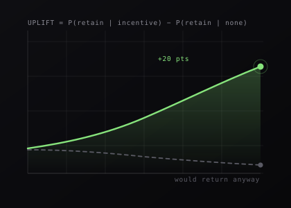

01 · RETENTION & INCENTIVE ECONOMICS
Beyond discounts: an AI retention engine for Zomato
In a multi-homing marketplace, the easy lever is a discount and the easy way to wreck unit economics is to make discounts the only reason anyone comes back. I reframed it as an incremental-retention-ROI problem and designed an uplift-modelled incentive engine on top.
North StarIncremental retained customers per ₹1,000 of incentive spend
Read case study
14 sections · ~9 min